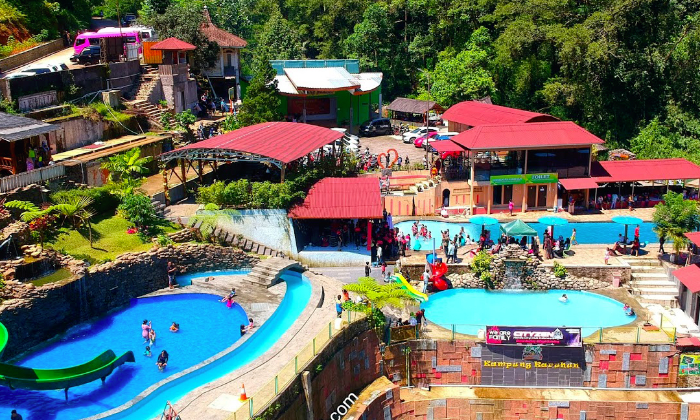
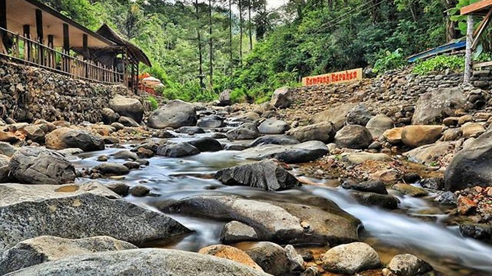
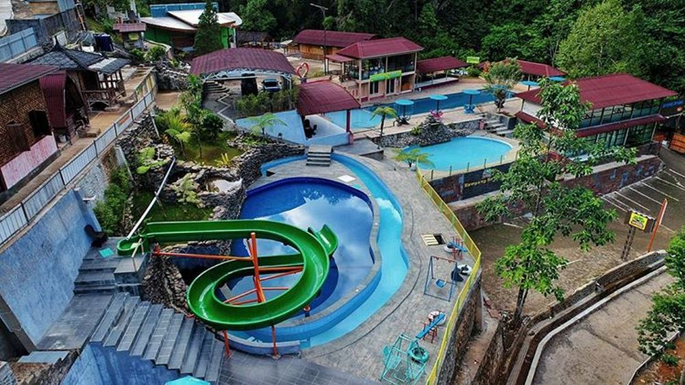
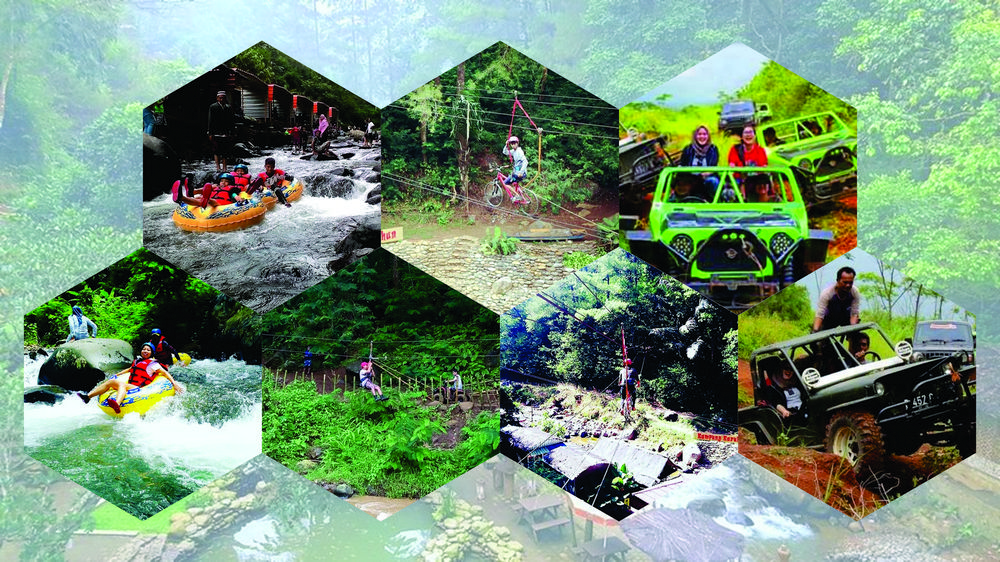
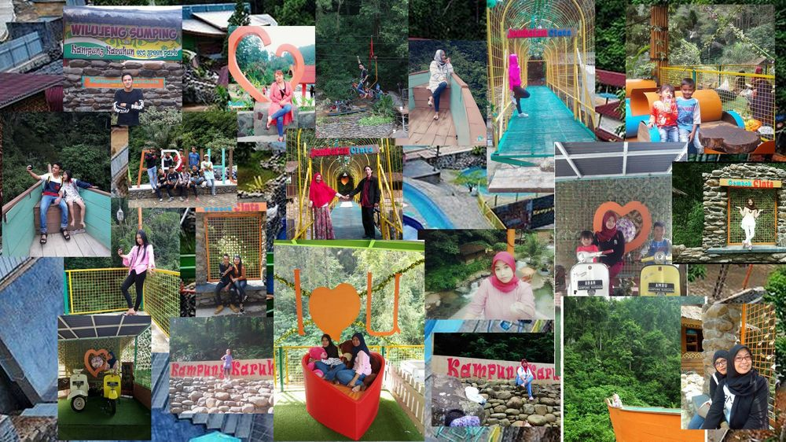
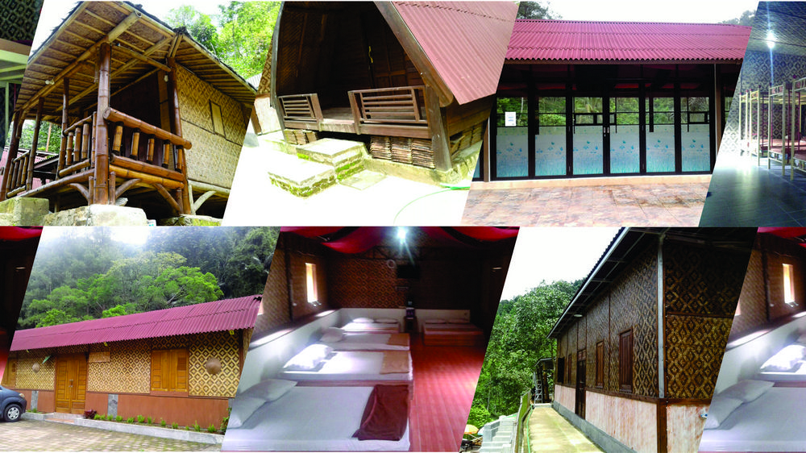

Kampung Karuhun
Kampung Karuhun merupakan sebuah kawasan wisata terpadu yang berada di wilayah Desa Citengah Kecamatan Sumedang Selatan. Lokasinya sekitar tujuh kilometer dari pusat kota Sumedang ke arah selatan. Kawasan Kampung Karuhun berupa pesawahan berbukit dan lingkungan hutan tropis yang masih terjaga keasriannya. Berbagai fasilitas dan wahana wisata tersedia di Kampung Karuhun. Ada fasilitas restoran, meeting room, pojok seni, cottage, saung budaya, meeting room, wedding door serta berbagai wahana seperti atv, flying fox dan river tubbing. Fasilitas restoran Kampung Karuhun menyediakan menu andalan Cobek Karuhun ditambah dengan nasi liwet komplit di buat secara langsung. Tersedia menu lainnya yang bisa dipilih. Ada juga fasilitas Saung Budaya yang digunakan untuk pementasan seni kedaerahan. Bagi yang ingin mencoba olahraga penjelajahan, Kampung Karuhun juga menyediakan wahana adventure.
Fasilitas Yang Tersedia di Kampung Karuhun
1. Wisata Alam
Dengan konsep Eco Green Park, Kampung Karuhun merupakan lokasi wisata yang tidak bisa dilepaskan dari suasana alam yang menghijau dengan udara yang sejuk dan berlatarkan hutan lindung yang masih alami. Ditambah dengan adanya aliran sungai Cihonje yang jernih yang menjadi bagian dari kawasan wisata Kampung Karuhun.
Wisata alam di Kampung Karuhun didukung oleh lokasinya yang berada di kawasan lembah hutan lindung di Desa Citengah. Di sekeliling kawasan Kampung Karuhun merupakan kawasan menghijau dipenuhi pepohonan. Tidak mengherankan jika pengunjung akan disajikan suasana yang tenang, tidak terlalu bising dan jauh dari hiruk pikuk keramaian perkotaan. Sehingga pengunjung Kampung Karuhun tidak bisa melihat selain rindangnya pepohonan di sekeliling kawasan wisata. Sangat cocok untuk menghilangkan kepenatan baik ketika hari libur maupun di hari-hari biasa.
Dan tak lupa juga aliran Sungai Cihonje yang menjadi bagian dari kawasan wisata Kampung Karuhun. Pengunjung Kampung Karuhun bisa sekalian bermain air di Sungai Cihonje yang memiliki air yang jernih dengan aliran air dalam kondisi normal tidak terlalu deras. Bermain air di Sungai Cihonje ini bukan hanya didominasi atau milik anak-anak saja, namun pengunjung dewasa pun pastinya akan tertarik untuk bermain air. Setidaknya untuk mencoba segarnya air sungai yang alami karena langsung berasal dari pegunungan di hulunya. Atau sekedar duduk-duduk di bebatuan yang berada di aliran sungai sambil berfoto ria. Sungai Cihonje ini bukan hanya airnya saja yang menyegarkan, namun rindangnya pepohonan di sisi sungaipun akan membawa suasana yang menyejukkan.
Karena aliran air Sungai Cihonje ini bersumber langsung dari pegunungan, airnya memiliki kandungan mineral yang baik untuk kesehatan tubuh. Segarnya air sungai ini akan meresap ke dalam tubuh jika pengunjungnya sengaja mandi di sungai ini. Bahkan dalam kondisi normal (airnya tidak keruh dikarenakan kondisi hujan misalnya), air Sungai Cihonje ini bisa langsung diminum.
2. Kolam Renang
Eco Green Park Kampung Karuhun menyediakan area bermain air berupa kolam renang. Kolam renang yang tersedia di Kampung Karuhun ini memiliki konsep modern dengan air yang jernih karena berasal dari air pegunungan langsung. Tidak tanggung-tanggung, di Kampung Karuhun terdapat tiga buah kolam renang dengan peruntukan dan konsep yang berbeda-beda.
Kolam renang utama yang paling besar dan berbentuk persegi panjang. Kolam renang ini memiliki kedalam hingga 1,5 meter, sehingga bisa dipergunakan oleh orang dewasa dan anak sekolah SMP/SMA. Ujung utara kolam renang ini dilengkapi dengan kolam renang dangkal berbentuk bulat lonjong yang bisa digunakan oleh anak kecil bermain dengan kedalaman 50 cm. Di pinggir kolam renang utama ini dilengkapi dengan air mancur kecil yang mengarah ke kolam renang.
Kolam renang kedua terletak di bawah kolam renang utama. Kolam renang ini bentuknya bulat lonjong dengan kedalaman sekitar satu meter dan berukuran leboh kecil dari kolam renang utama. Sehingga kolam renang ini sangat cocok untuk tempat bermain ana-anak. Kolam renang ini dilengkapi dengan air terjuan buatan yang mengalir dari atas bebatuan di sebelah timurnya.
Kemudian kolam renang terakhir yang terletak paling utara. Kolam renang ini memiliki ukuran yang hampir mirip dengan kolam renang kedua begitu juga dengan kedalamannya. Sehingga kolam renang ini juga sangat cocok untuk tempat bermain anak-anak. Perbedaan kolam renang ini dengan kolam renang kedua yaitu kolam renang ketiga ini dilengkapi dengan kolam arus yang mengelilingi kolam renang ketiga ini dan adanya slider yang berukuran panjang 22 meter.
Kolam arus yang mengelilingi kolam renang ketiga ini memiliki arus aliran air (air mengalir karena adanya pompa air). Kolam arus ini memiliki kedalaman 150 cm. Anak-anak atau pengunjung yang bermain di kolam arus ini bisa menyewa ban untuk dinaiki dan mengelilingi kolam renang. Harga sewa ban yang disediakan adalah Rp 10.000 untuk satu penyewaan dengan tidak ada batasan waktu (sepuasnya). Di salah satu bagian dari kolam arus ini ada yang berbentuk terowongan dengan panjang sekitar sepuluh meter. Di dalam terowongan air ini cukup gelap sehingga akan menambah keseruan bermain di kolam arus ini.
Perosotan atau sleder yang melengkapi kolam renang ketiga bisa digunakan oleh anak-anak untuk bermain perosotan. Anak-anak bisa bermain perosotan dari atas ke bawah satu putaran lebih dan diakhiri dengan menyeburkan diri di tengah kolam renang ketiga.
Kolam renang Kampung Karuhun dilengkapi dengan berbagai fasilitas penunjang. Bagi pengantar, tersedia tempat untuk menunggu yang terletak di sekitaran kolam renang utama baik berupa bangunan maupun meja bundar yang dilengkapi dengan peneduh. Di sekitaran kolam renang ketiga terdapat wahana bermain anak-anak seperti ayunan dan jungkitan. Dan bagi yang selesai bermain di kolam renang dan ingin mandi atau berganti pakaian, terdapat kamar bilas dan kamar ganti yang terletak di sekitaran kolam renang utama. Dilengkapi juga kantin bagi pengunjung yang ingin membeli makanan atau minuman.
Di dekat kolam renang utama ada tambahan fasilitas penunjang berupa panggung hiburan. Panggung hiburan ini baru bisa digunakan atau dipakai pada hari Ahad dengan kegiatan seperti karaokean.
3. Wahana Permainan Ekstrim
Bagi pengunjung yang menyukai tantangan, Kampung Karuhun menyediakan wahana permainan ekstrim. Wahana ekstrim yang akan memanjakan pengunjung untuk memacu adrenalin. Ada beberapa wahana yang tersedia di Kampung Karuhun ini seperti River Tubing, Flying Fox, Zip Bike dan Off Road.
River Tubing atau papalidan dilakukan di aliran air Sungai Cihonje. Aliran air Sungai Cihonje yang melintasi kawasan Kampung Karuhun cukup bisa digunakan untuk melakukan kegiatan River Tubing. River Tubing menggunakan media ban dalam bekas yang dinaiki oleh pengunjung yang kemudian bergerak ke arah hilir sesuai aliran air Sungai Cihonje. Kegiatan River Tubing ini, tidak hanya diperuntukan bagi orang dewasa saja. Namun bagi anak-anak juga bisa dikut serta hanya saja rutenya diperpendek sekitar setengahnya dari rute normal. Harganya pun setengahnya dari harga normal. Jarak normal River Tubing di Kampung Karuhun ini dari start sampai finish sekitar 400 meter.
Bagi yang suka dengan meluncur di udara, bisa mencoba flying fox. Kampung Karuhun menyediakan wahana flying fox yang terletak di atas aliran air Sungai Cihonje. Jarak jangkauan flying fox yang tersedia sekitar 70 meter dari start sampai finish.
Wahana lainnya yang berada di Kampung Karuhun adalah Zip Bike. Bagi yang suka tantangan mengendarai sepeda di atas seutas tali atau kabel, bisa mencoba Zip Bike. Zip Bike yang ada di Kampung Karuhun bisa dikendarai pengunjung dengan melintasi aliran Sungai Cihonje. Posisinya bisa dikatakan lebih tinggi dari pada flying fox. Sehingga akan lebih menegangkan. Jarak yang bisa ditempuh bagi pengendara Zip Bike ini sekitar 30 meter dari start sampai finish. Ketinggian wahana dari dasar sungai Cihonje sekitar 10 meter.
Wahana yang terakhir yang bisa digunakan pengunjung adalah Off Road. Wahana ini biasanya dilakukan dengan menjelajahi rute dari Kampung Karuhun ke Kampung Cisoka yang terletak di perkebunan teh Margawindu. Wahana ini menggunakan mobil off road yang bisa dipesan oleh pengunjung.
4. Spot Selfie
Saat ini, lokasi wisata tanpa zona selfie atawa tempat berfoto sendiri (selfie) atau foto bersama (wefie) akan terasa hambar. Lokasi wisata tidak bisa dipisahkan dengan berfoto ria, sehingga ada bagusnya jika di lokasi wisata disediakan tempat-tempat untu befoto ria baik foto bertema alam maupun foto bertema buatan.
Hal ini tidak bisa dilepaskan dengan menjamurnya media sosial terutama media sosial berbasis foto seperti instagram. Pengelola tempat wisata berlomba-lomba menyediakan zona atau spot untuk berfoto yang dikenal dengana istilah instagrammable. Lokasi yang bisa digunakan untuk berfoto yang menarik untuk di-upload ke media instagram.
Kampung Karuhun, sebagai tujuan wisata yang berlokasi di Desa Citengah juga tidak ketinggalan menyediakan beberapa zona atau spot yang bisa digunakan untuk berfoto ria baik selfie maupun wefie. Spot berfoto yang sengaja dibuat untuk memanjakan pengunjung yang ingin selfie atau wefie. Ada beberapa lokasi yang menarik untuk digunakan sebagai lokasi mengambil foto sendiri (selfie) atau berfoto bersama (wefie). Diantaranya adalah tugu love, gembok cinta dan perahu terbang. Tugu love berupa dua buah bingkai yang dibuat menyerupai bentuk love yang bisa digunakan sebagai latar untuk memfoto diri. Begitu juga dengan gembok cinta bisa digunakan sebagai latar memfoto diri.
Sebenarnya, untuk berfoto sendiri tidak mesti di tempat-tempat tersebut. Di tempat lainnya pun bisa digunakan untuk selfie seperti di kolam renang, di penginapan, di aliran Sungai Cihonje, di saung-saung lesehan, bahkan di jalan-jalannya pun bisa digunakan. Tinggal memilih sudut atau posisi yang tepat memotret.
5. Penginapan
Bagi yang memerlukan penginapan, baik penginapan untuk diri sendiri, keluarga atau tim (banyak orang), Kampung Karuhun menyediakan beberapa jenis tipe penginapan. Pengunjung Kampung Karuhun tidak hanya berwisata saja di kawasan Kampung Karuhun ini, tapi juga bisa sekaligus menginap. Atau sengaja menginap, bisa juga di penginapan yang tersedia di Kampung Karuhun.
Beberapa jenis penginapan yang ada di Kampung Karuhun diantaranya adalah Imah Awi, Imah Kayu, Barak Awi, Barak Kaca dan Bale Awi. Masing-masing jenis penginapan memiliki kapasitas dan spesifikasi yang berbeda-beda. Begitu juga tarifnya, masing-masing jenis penginapan memiliki tarif yang berbeda-beda.
Bagi keluarga kecil dengan jumlah angggotanya tiga atau empat orang, sangat cocok jika menggunakan Imah Awi atau Imah Kayu. Kedua penginapan ini berlokasi di bagian utara kawasan Kampung Karuhun dan posisinya berdekatan. Keduanya memiliki tipe yang sama, dan yang membedakannya adalah bentuk bangunan dari luaran. Sesuai dengan namanya, Imah Awi didominasi oleh bahan-bahan dari bambu, sementara Imah Kayu bahan bangunannya didominasi oleh kayu-kayuan. Kedua penginapan ini memiliki tarif yang sama yaitu kisaran Rp 300 ribu per hari.
Memerlukan penginapan untuk banyak orang? Bisa menggunakan bangunan Bale Awi, Barak Awi atau Barak Kaca. Penginapan ini bisa digunakan untuk tempat menginap sampai belasan orang. Sehingga cocok bagi perusahaan atau lembaga lain yang ingin menginapkan karyawannya ketika mengadakan kegiatan atau acara di luar kantor. Bahkan bisa sekaligus juga mengadaakn acara luar kantornya di Kampung Karuhun seperti company gathering atau outbond.
Salah satu bangunan yang bisa digunakan adalah Bale Awi. Penginapan jenis ini bisa menampung 14 sampai dengan 18 orang. Di dalamnya terdapat tempat menginap sebanyak tujuh buah double bed. Jika masih kurang, bisa menggunakan bangunan Barak Awi atau Barak Kaca. Keduanya bisa menampung antara 16 sampai dengan 20 orang, karena dilengkapi 16 bed utama untuk Barak Awi dan 24 bed utama untuk Barak Kaca dengan format bed bertingkat. Di penginapan ini bisa ditambahkan 4 bed extra untuk Barak Awi dan 6 extra bed untuk Barak Kaca.